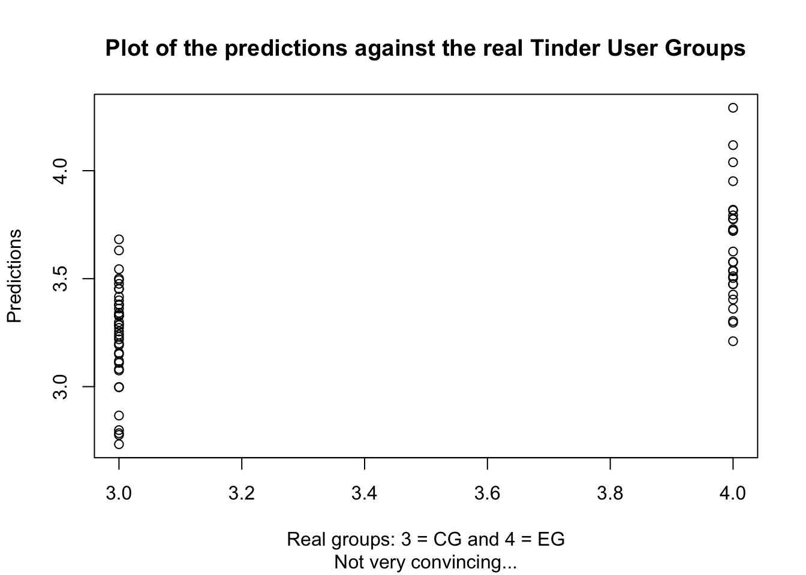
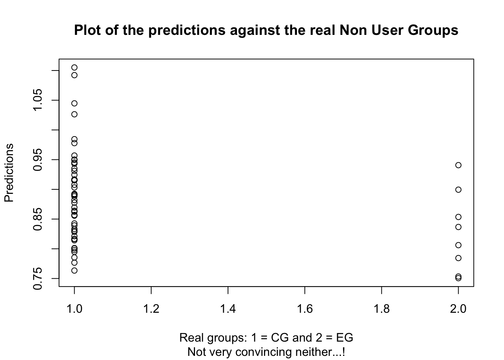

6 Analysis of the scores
6.1 Significance of self-esteem, body acceptance and impulsiveness
The present experiment aims to shows if there are significant differences in scores among groups in order to better profile Tinders users. The analysis of the significance of he scores are done with various linear regressions so as to know if the coefficient of those scores are enough discriminatory or not. First, the analysis is run on the scores only: self-esteem, body acceptance and impulsiveness scores are the dependant variables, defining with only one independant variable: the category of participants, namely Users (CG), Treated Users, Non Users (CG) and Treated Non Users. Here, we are only interested by the coefficient and their p-values, not by the representativeness of the model (R-squared), since the computed scores reduce information, in addition to the fact that a model basedon a sole independant variable would hardly achieve satisfactory results for explaining an outcome.
For modeling matters, the levels of "Groups" were turned into integers so as to handle numerical results :
- NonUser : 1
- TNonUser: 2
- User: 3
- TUser : 4
6.1.1 Self-Esteem
6.1 The self-esteem scores are not statistically different for the control and experimental groups of non-users of the Tinder application. However, the self-esteem score of the Tinder Users is statistically different at 10% from the Non-Users whereas Treated Users, our experimental group for Tinder users, is statistically different at 1%. They are satisfactory results, since we might have expected a slight difference between the control group and the experimental group of the subset of Non-Users, but a larger on between Tinder Users and Non Users (our first assumption).
\[ Group = SESscore + e\]
| term | estimate | std.error | p.value |
|---|---|---|---|
| (Intercept) | 16.81 | 0.26 | 0 *** |
| Group2 | -0.44 | 0.68 | 0.5234 |
| Group3 | -0.71 | 0.38 | 0.0654 |
| Group4 | -2.53 | 0.43 | 0 *** |
6.1.2 Body Acceptance Scale
6.2 However, the body acceptance score is more mitigated. In facts, this score is not statistically differents between both control groups. It signifies that the body acceptance is quite similar among the participants of the experiments, whether they use the application or not. It does not converge to the results on previous researches, such as Hawi and Samaha, in 2016. Our reference level being again the Non Users control group, the statistical differences are related to the experimental groups: the less different being the Non User experimental group at 10%, and the Tinder User experimental group at 1%. The key learning point here is that the variation resulting from the treatments achieve greater changes among Tinder Users than Non-Users. It is consistent with our second hypothesis, the potential unconstant self-image of the application users, since it was assumed they have a lower self-esteem and thus a potential greater propension to be affected by external manipulations.
\[ Group = BASscore + e\]
| term | estimate | std.error | p.value |
|---|---|---|---|
| (Intercept) | 27.98 | 0.75 | 0 *** |
| Group2 | -3.85 | 1.98 | 0.0535 |
| Group3 | 0.15 | 1.11 | 0.8955 |
| Group4 | -2.73 | 1.23 | 0.0284 * |
6.1.3 Impulsiveness Scale
6.3 Finally, as previously said, impulsiveness was not manipulated during the experiment. The natural score per group of participants are not enough discriminatory to be relevant: no p-values admit a significance equal or higher than 10%. Being a Tinder User would reduce the the impulsiveness score slightly, but it is not statistically significant.
\[ Group = AISscore + e\]| term | estimate | std.error | p.value |
|---|---|---|---|
| (Intercept) | 7.01 | 0.16 | 0 *** |
| Group2 | 0.31 | 0.43 | 0.4764 |
| Group3 | -0.08 | 0.24 | 0.7332 |
| Group4 | -0.08 | 0.27 | 0.7606 |
6.2 Modeling with SES, BAS and AIS scores
6.2.1 Exploring the significance of the scores among control and experimental groups
After having analysed the features independently, we now constuct the model with the computed scores of self-esteem, body acceptance and impulsiveness, the TinderMainScore being added for Tinder Users, in order to see if the regression is able to distinguish the experimental groups form the control ones. The model we analyse under this section if the following:
\[ Group = SESscore + BASscore +AISscore + TinderMainScore + e\]
We first start with the Tinder Users subset. The level of our independant variable is: * 3 : Control group of Tinder users and * 4 : Experimental group of Tinder Users
After running several regressions, the AIC-based selection model determined an inverse gaussian model to be the more fittable (AIC_inverse.gaussian : 75.79, AIC_Gamma : 76.79, AIC_gaussian : 80.04, AIC_Poisson : 231.9). However, the model is of a low quality: the Adjusted R-squared equals 0.332. The below plot points out a tendancy to overestimate the control group, since only 4 values are above the threshold of 3.5 (closer to 3 or 4?). The proportion of 3 and 4 in real values are not represented at all by the predictions.

The table 6.4 displays the coefficients and their significance. Self-esteem and body acceptance scores are significant at 1%, whereas Sexual exploration and social approval scores are significant at 5%. 4 features are significant at at least 5% for determining if the Tinder User belongs to the experimental group or the control group. It signifies that the gaussian model supports that the manipulations of the present experiments were enough effective to modify the scores. To summarize, some coefficients might be of interest while being in a model not satisfying.
| term | estimate | std.error | p.value |
|---|---|---|---|
| (Intercept) | 6.59 | 0.62 | 0 *** |
| SESscore | -0.14 | 0.03 | 0 *** |
| BASscore | -0.04 | 0.01 | 3e-04 *** |
| AISscore | -0.02 | 0.05 | 0.6512 |
| TinderMainScoreRelSeekingScore | 0.21 | 0.18 | 0.2531 |
| TinderMainScoreSexualExpScore | 0.39 | 0.16 | 0.0214 * |
| TinderMainScoreSocApprovalScore | 0.37 | 0.15 | 0.0198 * |
| TinderMainScoreSocPressureScore | 0.02 | 0.13 | 0.87 |
To better see how to improve our current model by keeping only the "good" coefficients, we use the step() function which compute the AIC for the model formed by adding (or removing) step by step the features of our previous model. The results of the the backward and forward methods are below. The results are read as the deviance (error) has to be the lowest and the AIC as well, which is our model selection criteria. Thus, the best model would be composed all the features except the AIS score. This information does not support our second starting hypothesis.
## Start: AIC=78.2
## Group ~ SESscore + BASscore + AISscore + TinderMainScore
##
## Df Deviance AIC
## - AISscore 1 9.66 76.4
## <none> 9.63 78.2
## - TinderMainScore 4 11.20 80.3
## - BASscore 1 12.01 91.0
## - SESscore 1 14.31 102.7
##
## Step: AIC=76.4
## Group ~ SESscore + BASscore + TinderMainScore
##
## Df Deviance AIC
## <none> 9.66 76.4
## + AISscore 1 9.63 78.2
## - TinderMainScore 4 11.20 78.3
## - BASscore 1 12.10 89.5
## - SESscore 1 14.31 100.7We now reproduce our model to be applied to the Non-Users subset. The levels of our dependant variables are: * 1 : Control group of Non Users and * 2 : Experimental group of Non Users
The below plot presents as well bad results: we observe that the eight Non users being in the experimental group do not have their equivalent in predictions, since ranging from 0.751 and 1.105, which are far from the value 2. The Adjusted R-squared equals 0.332, far as well from the threshold of 80% determining a somehow satisfactory model.

The table 6.5 confirms our negative intuition: none of the values are significant, the model does not fit our data, what the Adjusted R-Squared already revealed. The positive correlation of the features would signify that higher are the scores, higher is the chance to belongs to the experimental group. In other words, the experimental should have higher scores than participants not treated, what is not consistent with the Exploratory Data Analysis.
| term | estimate | std.error | p.value |
|---|---|---|---|
| (Intercept) | 0.56 | 0.45 | 0.2189 |
| SESscore | 0.01 | 0.02 | 0.6338 |
| BASscore | 0.01 | 0.01 | 0.0552 |
| AISscore | -0.03 | 0.03 | 0.3873 |
6.2.2 Classification model for predicting the sample subsets
In addition to quantify the link between our inputs and output, we want to perhaps undercover a qualitative link: the use of a learner. A neural network with two nodes are used to classify our participants, we neglect here the parametrization of decay. The figure 6.1 depicts the computed neural network with the coefficients. Don't linger over the significance of the coefficients (which would be by the way a harsh tasks since neural network coefficients have a low interpretanility), the use of neural network here is only to verify the accuracy before to having a closer look, if and only if the model is satisfying. The accuracy of our neural network is 0.895, very low again and not satisfying.
## # weights: 172
## initial value 164.894632
## iter 10 value 115.033512
## iter 20 value 53.546515
## iter 30 value 36.927437
## iter 40 value 30.813333
## iter 50 value 29.864486
## iter 60 value 29.637065
## iter 70 value 29.501367
## iter 80 value 29.448374
## iter 90 value 29.409839
## iter 100 value 29.365045
## final value 29.365045
## stopped after 100 iterationsFigure 6.1: Neural network based on the self-esteem, body acceptance and impulsiveness scores
Since the above results are again not a help, we decided to included two additional features which might bring useful information to better model the data. In the Exploratory Data Analysis, we observed that the relationship type admits differences among groups, as well as the variable Age. Since it might be colinearity between both, we might select one rather the other. Because Age is more reliable and less subject to subjective interpretation, we built our regression as follows:
\[ Group = SESscore + BASscore +AISscore + Age + e\] and the plot is shown below. The accuracy is far more satisfying: we reach 0.379! It is certainly too high this time not to include any bias. To investigate further, we would run a regression including both Age and Relationship and adding TinderMainScore, before using the step method in order to see if a better model could be built and reduce the bias.
## # weights: 188
## initial value 168.698992
## iter 10 value 106.539701
## iter 20 value 52.650667
## iter 30 value 45.704712
## iter 40 value 41.847713
## iter 50 value 41.267943
## iter 60 value 40.996947
## iter 70 value 40.925583
## iter 80 value 40.903592
## iter 90 value 40.879466
## iter 100 value 40.870505
## final value 40.870505
## stopped after 100 iterationsFigure 6.2: Neural network based on the self-esteem, body acceptance and impulsiveness scores
| term | estimate | std.error | p.value |
|---|---|---|---|
| (Intercept) | 6.42 | 0.84 | 0 *** |
| SESscore | -0.15 | 0.03 | 0 *** |
| BASscore | -0.04 | 0.01 | 0.005 ** |
| AISscore | -0.01 | 0.05 | 0.9217 |
| Age | 0.00 | 0.03 | 0.9488 |
| Relationship2 | 0.13 | 0.15 | 0.3786 |
| TinderMainScoreRelSeekingScore | 0.20 | 0.27 | 0.4698 |
| TinderMainScoreSexualExpScore | 0.40 | 0.20 | 0.0493 * |
| TinderMainScoreSocApprovalScore | 0.35 | 0.18 | 0.0589 |
| TinderMainScoreSocPressureScore | 0.10 | 0.15 | 0.5029 |
Self-esteem, body acceptance and Sexual experience as Tinder Motive are three significant features at 5%. The Adjusted R-Squared equals 0.337. In spite of a satisfactory AIC (56.1), The regression has no power for explaining the variance. The table 6.6 underlines again the significance of the self-esteem score, but the other features do not have any statistical significance to model the group of participants. This deceiving attempt points out the bias shown in the previous neural network (the very high accuracy), and on the second hand the low quality of our data to satisfy our aim to model Tinder Users participants by their self-esteem, body acceptance AND impulsiveness scores, if not some other features to strenghten modeling ability. We might question the data collection process, the sampling methodology and the experimental design.
The step method proposes an improvement. Age and impulsiveness are not selected. The better model has a lower AIC (52.1): \[Group = SESscore + BASscore + Relationship + TinderMainScore + e\]
## Start: AIC=56.1
## Group ~ SESscore + BASscore + AISscore + Age + Relationship +
## TinderMainScore
##
## Df Deviance AIC
## - Age 1 5.72 54.1
## - AISscore 1 5.72 54.1
## - Relationship 1 5.84 55.1
## - TinderMainScore 4 6.72 55.8
## <none> 5.72 56.1
## - BASscore 1 7.06 64.2
## - SESscore 1 8.97 75.7
##
## Step: AIC=54.1
## Group ~ SESscore + BASscore + AISscore + Relationship + TinderMainScore
##
## Df Deviance AIC
## - AISscore 1 5.72 52.1
## - Relationship 1 5.85 53.2
## - TinderMainScore 4 6.72 53.8
## <none> 5.72 54.1
## + Age 1 5.72 56.1
## - BASscore 1 7.07 62.3
## - SESscore 1 9.32 75.5
##
## Step: AIC=52.1
## Group ~ SESscore + BASscore + Relationship + TinderMainScore
##
## Df Deviance AIC
## - Relationship 1 5.85 51.2
## - TinderMainScore 4 6.72 51.9
## <none> 5.72 52.1
## + AISscore 1 5.72 54.1
## + Age 1 5.72 54.1
## - BASscore 1 7.07 60.3
## - SESscore 1 9.32 73.5
##
## Step: AIC=51.2
## Group ~ SESscore + BASscore + TinderMainScore
##
## Df Deviance AIC
## - TinderMainScore 4 6.85 50.8
## <none> 5.85 51.2
## + Relationship 1 5.72 52.1
## + Age 1 5.84 53.1
## + AISscore 1 5.85 53.2
## - BASscore 1 7.16 58.9
## - SESscore 1 9.32 71.5
##
## Step: AIC=50.8
## Group ~ SESscore + BASscore
##
## Df Deviance AIC
## <none> 6.85 50.8
## + TinderMainScore 4 5.85 51.2
## + Relationship 1 6.72 51.9
## + AISscore 1 6.83 52.6
## + Age 1 6.85 52.7
## - BASscore 1 7.65 54.1
## - SESscore 1 9.90 66.4The regression is not satisfactory. The table 6.6 underlines again the significance of the self-esteem score, but the other features do not have any statistical significance to model the group of participants. The Adjusted R-Squared equals 0.337. This deceiving attempt points out the bias shown in the previous neural network (the very high accuracy), and on the second hand the low quality of our data to satisfy our aim to to have a well-built moodel for Tinder Users participants based on their self-esteem, body acceptance AND impulsiveness scores, if not some other features to strenghten modeling ability. We might question the sampling methodology and the experimental design.